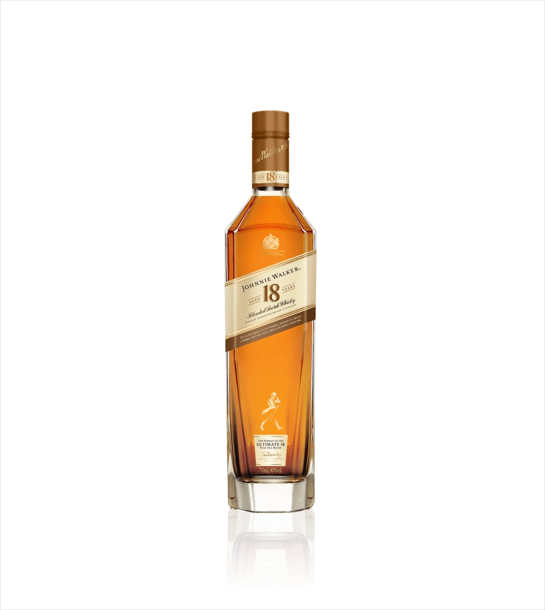
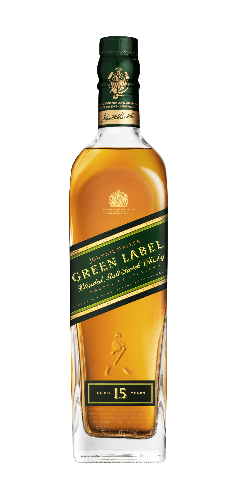

La familia johnnie walker es una de las mas sofisticadas y elegantes del mundo
Johnnie Walker Red Label
Johnnie Walker Red Label es nuestra mezcla pionera, la que ha presentado nuestro whisky en todo el mundo. Versátil y con un atractivo universal, tiene un sabor acentuado y lleno de carácter que se mantiene incluso al ser mezclado. Johnnie Walker Red label es ahora el whisky escocés más vendido en todo el mundo. Perfecto para fiestas y encuentros, en casa o al salir de ella. Disfrútelo con sus amigos.
Johnnie Walker Red Label se destaca por su carácter e intensidad, por sus notas especiadas que estallan con sabores vibrantes y ahumados. Es una mezcla que combina whiskies ligeros de la costa este escocesa y whiskies ahumados y oscuros de la costa oeste, creando una extraordinaria profundidad de sabor.
Johnnie walker Black Label
Johnnie Walker Black Label es rico, complejo y bien balanceado, un blend con notas a frutos del bosque, vainilla y tierra ahumada. Un whisky excepcional para compartir en cualquier ocasión, sea pasando un rato agradable en casa con sus amigos o en una salida inolvidable.
Johnnie Walker Double Black
Johnnie Walker Double Black es una mezcla intensa, poderosa, con cuerpo y ahumada. Una mezcla increíble para compartir sin importar la ocasión.
Johnnie Walker Gold Label
Johnnie Walker Gold Label Reserve es la mezcla perfecta para una celebración indulgente. Lujoso, cremoso, suaves tonos de miel, con notas ahumadas y roble.
Johnnie Walker 18 Años

Este whisky excepcional fue inspirado por la tradición de John Walker de regalar mezclas privadas a un círculo cercano de amigos, mezclado con whiskeys de 18 años. Cuando quieras hacer de una ocasión especial algo excepcional, Johnnie Walker 18 Años es la elección perfecta.
Johnnie Walker Blue Label
Johnnie Walker Blue Label es una obra maestra inigualable. Es una mezcla exquisita hecha con algunos de los whiskies más raros y excepcionales de Escocia. Solo uno de cada diez mil barriles tiene la calidad exclusiva y el carácter para entregar el sabor insignia e inolvidable de Johnnie Walker Blue Label.
Johnnie Walker Green Label

El sabor único de Johnnie Walker Green Label es una delicada combinación de cuatro estilos de firma clave. Crea una profundidad de carácter que simplemente no es posible lograr con un solo whisky de malta.